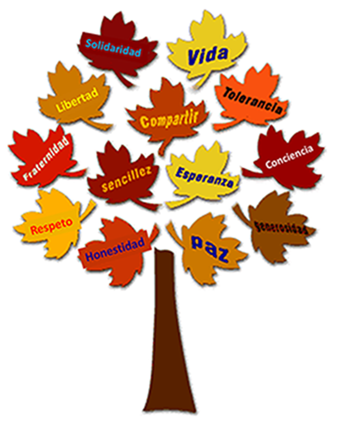

Horizonte
La I.E. INEM JOSÉ FÉLIX DE RESTREPO es una institución oficial, dedicada a la prestación de servicios de educación formal en los niveles de Preescolar, Básica Primaria, Básica Secundaria, Media Técnica y Media Académica.

Estudiantes del INEM formando las letras desde el aire
Mision
La I.E. INEM JOSÉ FÉLIX DE RESTREPO es una institución oficial, dedicada a la prestación de servicios de educación formal en los niveles de Preescolar, Básica Primaria, Básica Secundaria, Media Técnica y Media Académica. Mediante una propuesta curricular diversificada, flexible y abierta a la innovación pedagógica, propicia la formación integral de sus estudiantes fundamentada en valores, en la conservación ambiental, en aprender a ser, a conocer, a hacer y a convivir dentro de un contexto de participación democrática y de trabajo colaborativo. El egresado, por lo tanto, tendrá la posibilidad de continuar su proceso formativo en la educación terciaria, vincularse al mundo del trabajo o generar opciones de auto sostenimiento mediante proyectos de emprendimiento.
INEM Jose Felix de Restrepo.
Valores
Valores principales de todo inemita de corazon.
Vision
En el año 2020, la Institución Educativa INEM JOSÉ FÉLIX DE RESTREPO, caracterizada por su diversificación, se perfilará como un escenario educativo de alta calidad y centro de apropiación técnica y tecnológica en el área metropolitana del Valle de Aburrá, que involucra la investigación escolar en los procesos educativos, en los niveles de Preescolar, Básica Primaria, Básica Secundaria, Media Académica y Media Técnica. Así, desde la investigación, la formación académica y humana y la apropiación tecnológica formará integralmente ciudadanos autónomos, críticos, creativos, democráticos y comprometidos con el medio ambiente que valoren el saber científico, social y cultural; sujetos activos en producción de nuevos conocimientos; competentes para continuar en la cadena de formación técnica, tecnológica y profesional o acercarse al mundo laboral..
Obras de arte echas por estudiantes.